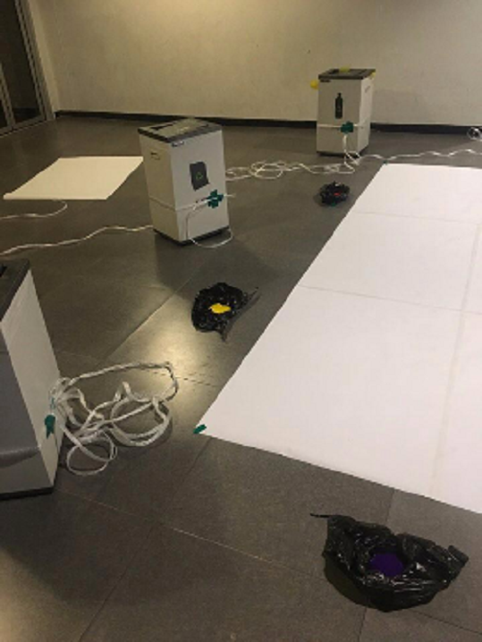
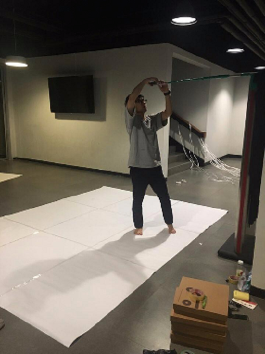
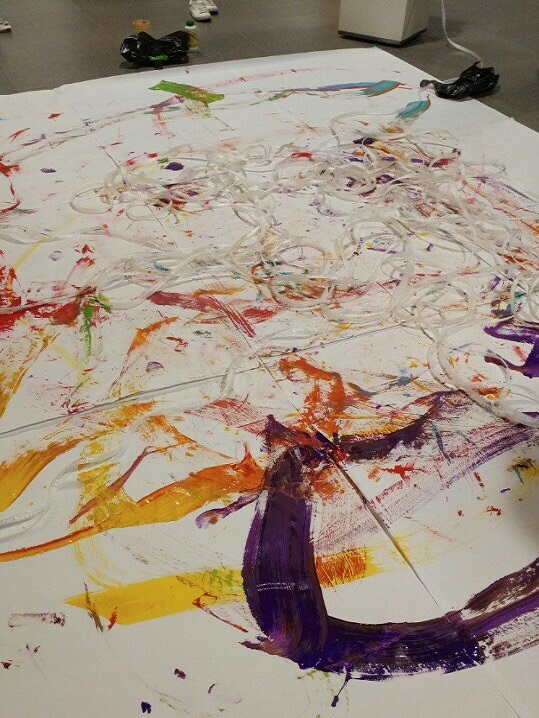
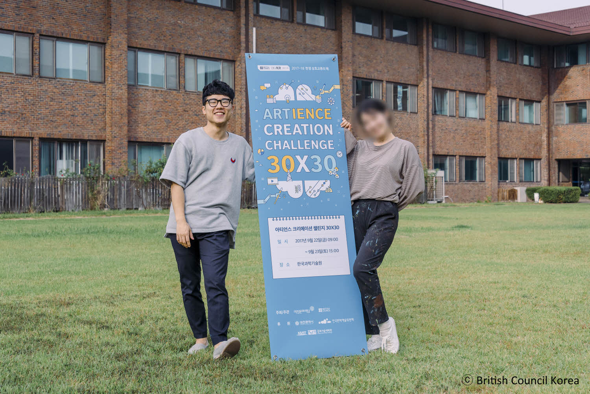

My role: contents development, performance directing
Collaborator: Yukung Jung
Art work at 2017 Artience Creation Challenge 30x30, 30 hours straight collaboration work with one artist.
British Council Korea hosted and Daejeon Culture and Arts Foundation supported the challenge.
To express challenge topic ageing, we chose entropy which measures disorder and indicates direction of time.
Video art work shows increase of entropy with getting aged person.
Performer fills paint named life on white drawing paper named time, as being covered up with rope named disorder.
Just as life, performer shows her agony as holding and dropping brush or trying to break the rope.
However, inside of irrefutable and natural flow of entropy, she finally accepts disorder which fully covered up her body at ease.
Since competition started with zero-based, team had to find an idea to metaphor ageing through a compact communication.
Conversation lasted about 6 hours as sharing knowledge, experience and technique of each other.



Partner had majored ballet around 10 years.
Using this strength facilitated expression of ageing through tangled rope and randomly painted drawing paper, which also resembled notion of entropy.
Limitation in time and resources of the competition restricted shooting subject to non-professional, field, or daily products.

Connecting two different backgrounds and overcoming difficulty of 30 hours straight work produced successful visual metaphor for concept of entropy and ageing through video art.
This work described entrophy and ageing in intuitive manner to the judge and participant and won the Runners-Up of the competition.